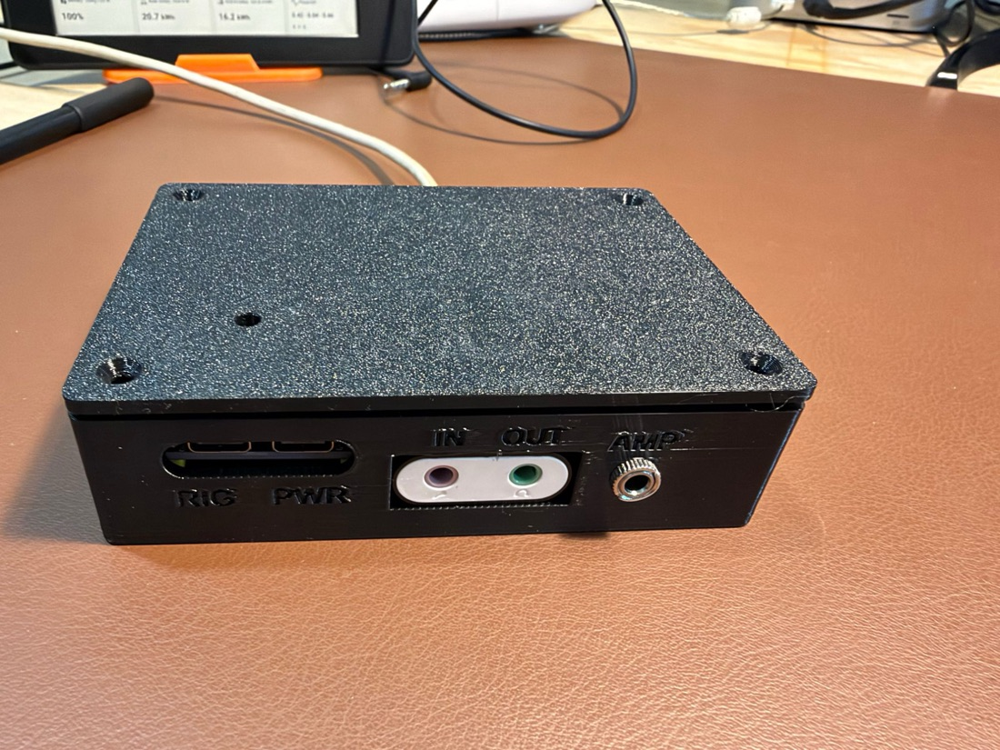
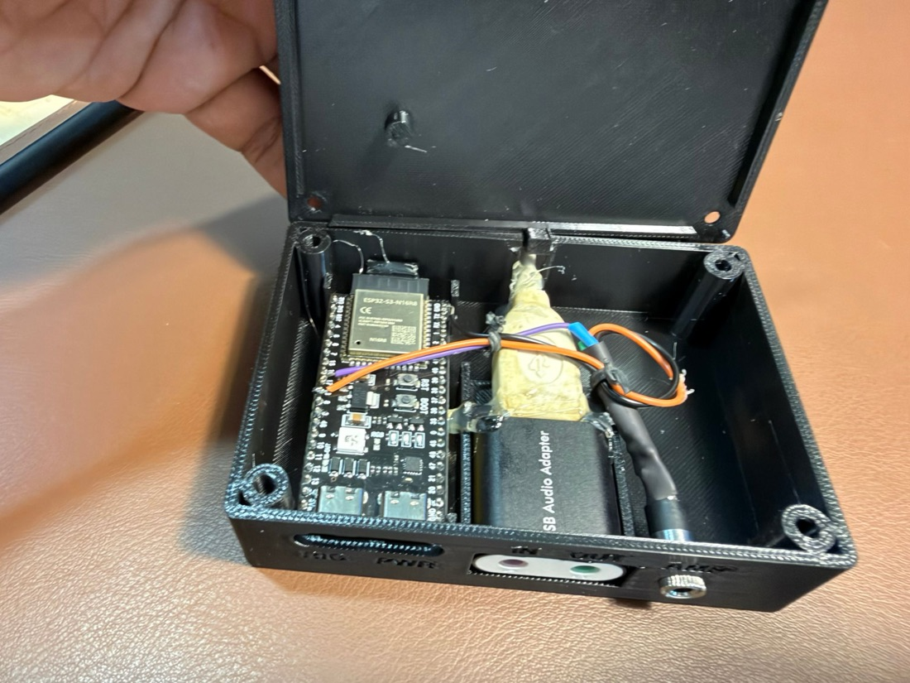
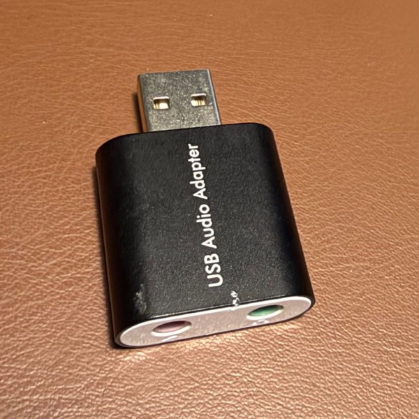
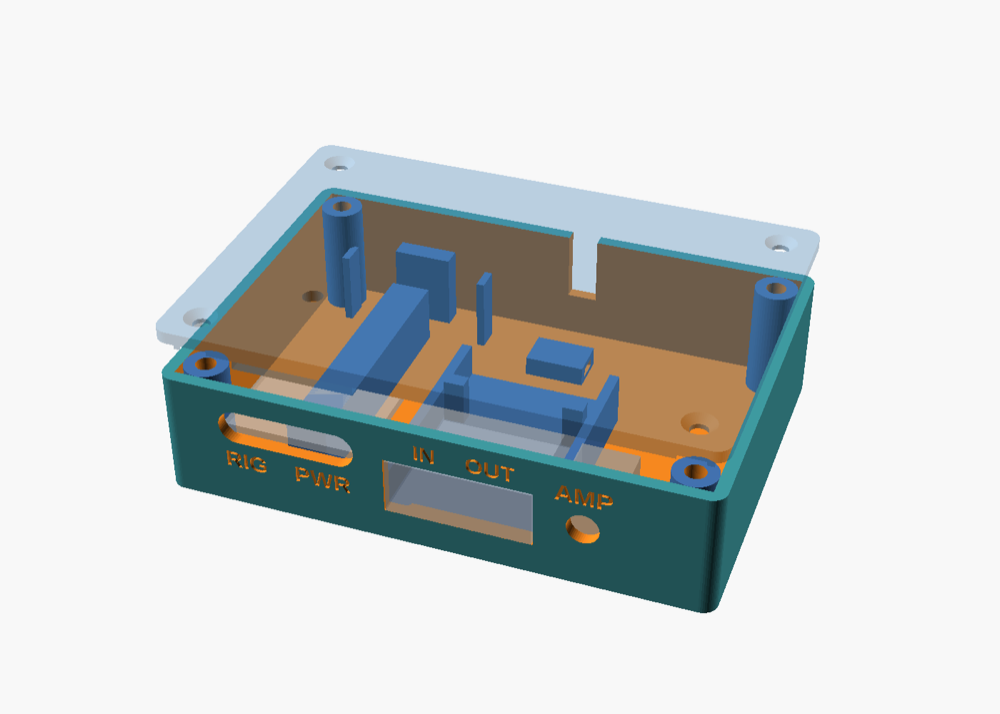
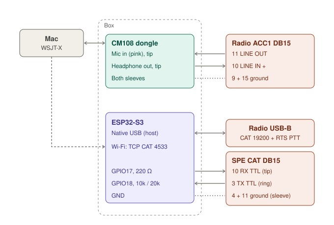
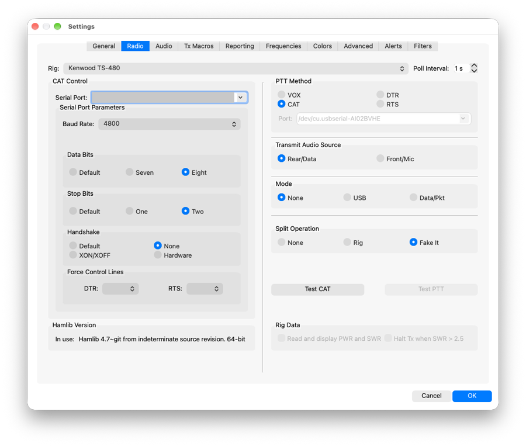
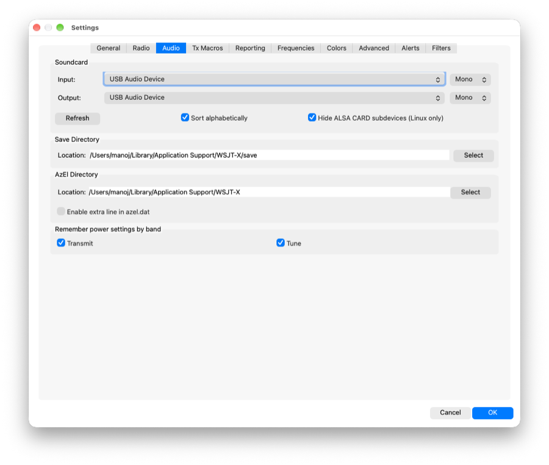

One box for RGO ONE CAT, audio and PTT, with the SPE Expert amp following
Manoj VU2CPL · November 2026 · source: github.com/vu2cpl/rgo-spe-cat
The RGO ONE has one USB CAT port. I wanted three things on it at once: the SPE Expert 1.5K-FA following band changes, WSJT-X and the logger controlling the radio, and USB audio for FT8. This small 3D-printed box does all three. Below is how it works, and a few things about the RGO ONE I learned along the way that may help other owners.

What is in the box
- ESP32-S3 (N16R8) acting as USB host to the RGO ONE's USB-B port (an FTDI FT232R). It polls the radio with
IF;every 150 ms. - SPE output: the S3 answers the amp's Kenwood
IF;polls over 5 V TTL (via the amp's DB15 CAT socket), so the amp follows every band change. No band-data cable. - CAT over Wi-Fi: a Kenwood CAT server on TCP port 4533. WSJT-X, JTDX and loggers use Hamlib's Kenwood TS-480 model with the box's address as the "serial port".
- CM108 USB sound card for RX and TX audio, wired to the radio's ACC1 DB15. It plugs into the PC on its own USB cable.
- PTT: the box turns WSJT-X's CAT
TX;/RX;into the radio's USB RTS line (see the note below on why). - Rig state is also published over MQTT, and the firmware updates over Wi-Fi.



Enclosure

Wiring

| Radio ACC1 (DB15) | Goes to |
|---|---|
| 11 LINE OUT | Dongle mic input (pink), tip. Direct. |
| 10 LINE IN + (600 Ω) | Dongle headphone output, tip. Direct. |
| 9 LINE IN − | Joined to 15 in the plug hood (input driven unbalanced). |
| 15 Ground | Cable screen, both plug sleeves. |
| 1, 2, 12, 13, 14 | Leave open (13 V, VC, 8 V RX, 8 V TX, power-on). |
| SPE CAT (DB15) | Goes to |
|---|---|
| 10 RX TTL | S3 GPIO17 through 220 Ω. |
| 3 TX TTL (5 V) | 10 k to GPIO18, 20 k from GPIO18 to ground (the S3 is not 5 V tolerant). |
| 4 Ground, 11 KEN TTL | Ground. Pin 11 grounded selects the TTL Kenwood interface. |
| 8, 12 | Leave open (remote-on, relay). |
Amp setting: SET → CAT → KENWOOD, 9600 baud, then power-cycle it. The amp's TTL CAT idles low (inverted), which the firmware handles.
RGO ONE notes that may save you time
TX; does not really transmit. Sent over CAT, TX; makes the display show TX, but there is no RF, the amp-key output does not switch, and ACC1 audio is not passed. Real PTT from a PC is the USB RTS line: set menu 33 (RTS) = ON. The hand-mic PTT and VOX also key it properly.- CAT port: FTDI FT232R, 19200 baud (menu 22), TS-480-style Kenwood.
FA;andIF;work.ID;andFW;get no reply, andMD;comes back as a bareMD;. The box answers those itself so Hamlib doesn't time out. - ACC1 LINE OUT is low. It comes from a fixed-gain buffer on the IF/AF board, after the AGC and before the volume control, and there is no level trimmer (the trimmers on that board set the AGC). Wire it straight to the sound card's mic input, with no divider. Here it gives about 25 dB in WSJT-X with the preamp off and about 35 dB with the preamp on. RF gain up, preamp on and ATT off all raise it.
- ACC1 LINE IN (600 Ω): straight from the CM108 headphone output, with the PC volume at max, gives ALC 1–2 dots. That's about right, but with no headroom to spare.
- Keep VOX off when you use RTS PTT. VOX works as a fallback (menu 10), but then any sound the PC sends to the dongle keys the transmitter.
Radio and WSJT-X settings
| Where | Setting |
|---|---|
| Radio menu 02 | LINE IN: ON |
| Radio menu 22 | CAT port: 19200 |
| Radio menu 33 | RTS signal (PTT): ON |
| Radio menu 10 | VOX: Off |
| WSJT-X → Radio | Rig Kenwood TS-480 · Serial Port <box-ip>:4533 · PTT Method CAT · Split "Fake It" |
| WSJT-X → Audio | Input and Output: USB Audio Device |

192.168.x.x:4533.
Lessons from the build
- Measure the audio levels before you close the cable. My first cable had a 10 k / 1 k divider on RX "to bring line level down to mic level". On the RGO ONE that left WSJT-X at about 0 dB, and the hood had to come off again.
- Check the radio's menus before blaming the hardware. The "no TX audio" hunt ended at menu 02.
- Give the sound card jacks real clearance. In the first print, 1/8" plugs could not seat through a 2.5 mm wall, so the dongle now sits flush in a window in the panel.
The firmware (PlatformIO, Arduino-ESP32), the OpenSCAD enclosure and the full build notes are all on GitHub: github.com/vu2cpl/rgo-spe-cat. Questions are welcome on the group.
73, Manoj VU2CPL